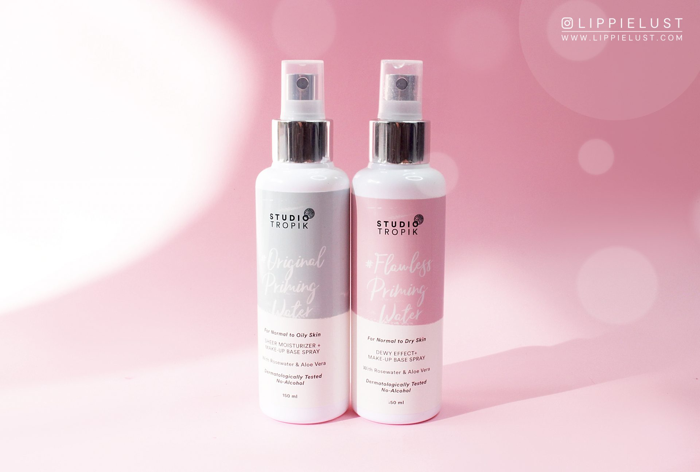
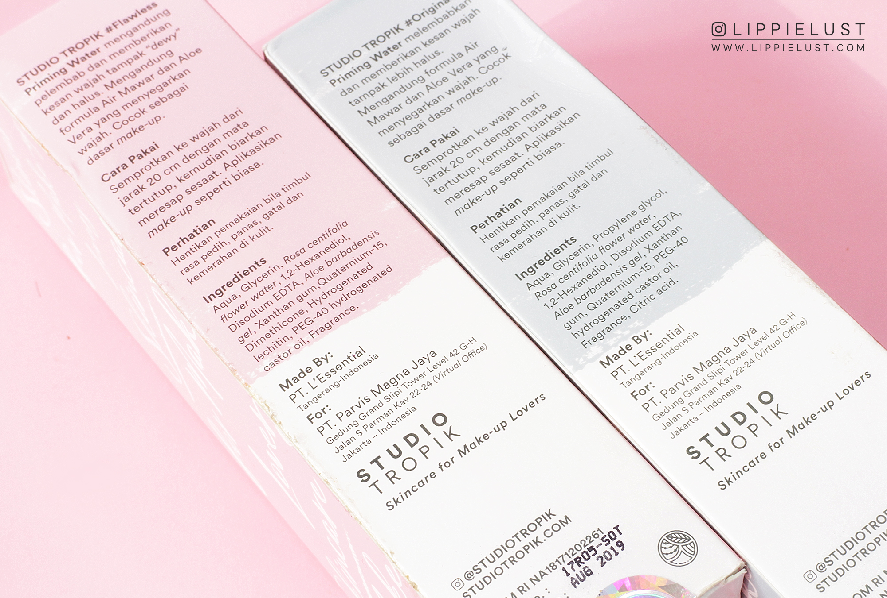

Studio Tropik 'Original' & 'Flawless' Priming Water
Seperti yang kalian tahu, STUDIO TROPIK memiliki dua varian priming water. Original Priming Water diperuntukkan bagi yang memiliki kulit normal – berminyak, sedangkan Flawless Priming Water khusus untuk yang memiliki kulit normal – kering.

Keduanya punya fungsi yang sama, yaitu makeup base spray. Diaplikasikan setelah skincare, bahkan sunscreen, dan sebelum foundation / BB Cream. Apakah bisa diaplikasikan tanpa makeup? Karena fungsinya yang memang untuk menstabilkan kondisi kulit muka, maka produk ini bisa dipakai tanpa pengaplikasian makeup setelahnya. Kulit akan terasa lebih kenyal dan lembut (ini bahasa jualan banget, tapi memang seperti itu adanya hahaha), mengingat ada 2 bahan baku bintang lima yang digandeng di dalam produk ini.
Jika dipakai sebagai Setting Spray, kedua produk ini bisa menahan makeup sampai 6-8 jam, tergantung cuaca dan iklim. Dua minggu lalu aku bawa Flawless Priming Water ke Bali untuk aku pakai sebagai setting spray dan surprisingly, produk ini bekerja dengan sangat baik. Gak ada tanda-tanda foundation yang meleleh atau malah pecah — well thanks to the Aloe Vera yang terkandung di dalamnya.

Setelah berkali-kali aku pakai, maka sampailah aku ke satu kesimpulan bahwa: Original Priming Water tidak memiliki hasil akhir yang matte, hanya membuat tampilan makeup lebih natural aja. Sedangkan untuk Flawless Priming Water (ini yang jadi favoritku), menghasilkan efek dewy tanpa terlihat ‘berminyak’. Singkatnya, Original Priming Water dan Flawless Priming Water memiliki hasil akhir yang tidak begitu berbeda, hanya ‘tingkat’ moisturizing-nya aja yang berbeda.
Ok one last thing: STUDIO TROPIK Priming Water ini mengingatkan aku sama Glossier Rosewater Spray, apalagi warna dan font-nya, dan kandungan utama di dalamnya (Aloe Vera, Rosewater, dan Glycerin), walaupun ingredients lainnya sama sekali berbeda. Aku pribadi lebih suka desain Studio Tropik apalagi logonya. WHY DID I MENTION THAT EARLIER? I freakin love STUDIO TROPIK’s logo!
Hal lain yang membedakan Glossier Rosewater Spray dan STUDIO TROPIK Priming Water adalah harga (Studio Tropik: 99,000, Glossier: 18 USD – sekitar 250,000) dan berat bersih produknya (Studio Tropik: 150ml, Glossier: 118ml).
The Best Application
STUDIO TROPIK Priming Water bisa dipakai untuk:
primer sebelum makeup
untuk membasahi brush atau makeup sponge sebelum aplikasi makeup
setting spray setelah makeup
mist untuk melembabkan muka (mid-day application), bisa diaplikasikan untuk re-set makeup walaupun sudah berjam-jam ber-makeup.